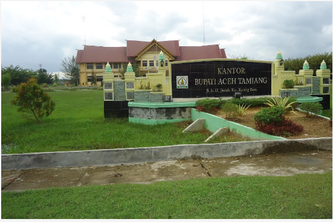

Aceh Tamiang

VISI DAN MISI KABUPATEN ACEH TAMIANG
VISI :
"ACEH TAMIANG MANDIRI DAN BERDAYA SAING MENUJU MASYARAKAT ISLAMI YANG SEJAHTERA"
MISI :
- 1. Meningkatkan kualitas pengamalan Syariat Islam dengan upaya-upaya keteladanan dan Pengembangan Budaya Islam.
- 2. Memantapkan tata kelola pemerintahan yang baik, melayani, berkualitas dan berbasis Information Communication Technology (ICT).
- 3. Meningkatkan pertumbuhan ekonomi dan kesejahteraan masyarakat dengan pemberdayaan ekonomi kerakyatan, pembangunan pertanian, peternakan, perkebunan, perikanan, kelautan dan potensi sumber daya alam lainnya.
- 4. Pemantapan aksesibilitas dan kualitas pelayanan pendidikan dan kebudayaan, kesehatan serta ketenagakerjaan.
- 5. Meningkatkan pembangunan infrastruktur prasarana sarana layanan dasar serta pembangunan lingkungan berkelanjutan dan mitigasi bencana.
- 6. Penguatan peran dan fungsi lembaga pemerintah tingkat kecamatan dan Kampung.
- 7. Pemberdayaan dan Perlindungan Terhadap Perempuan dan Anak Serta Pembinaan Pemuda dan Olah Raga.